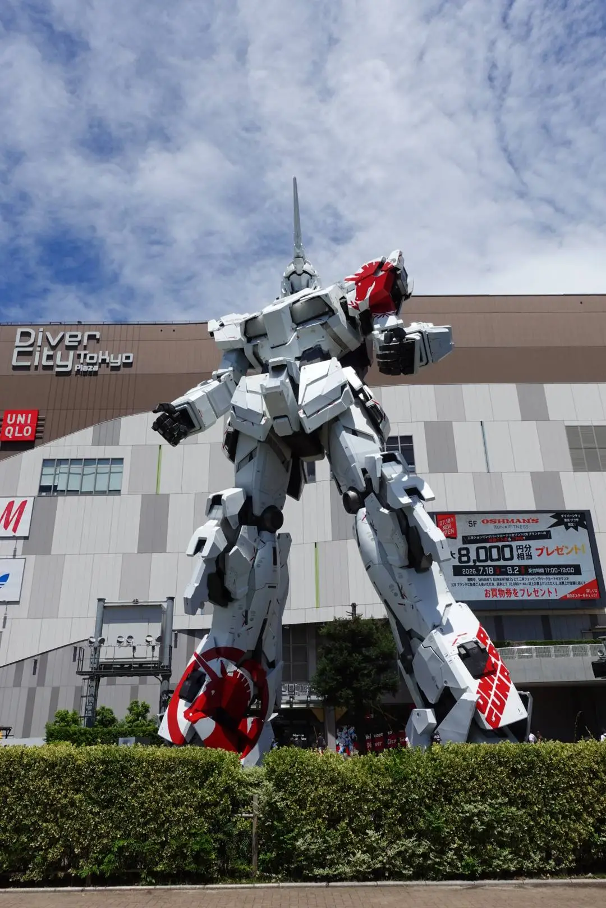
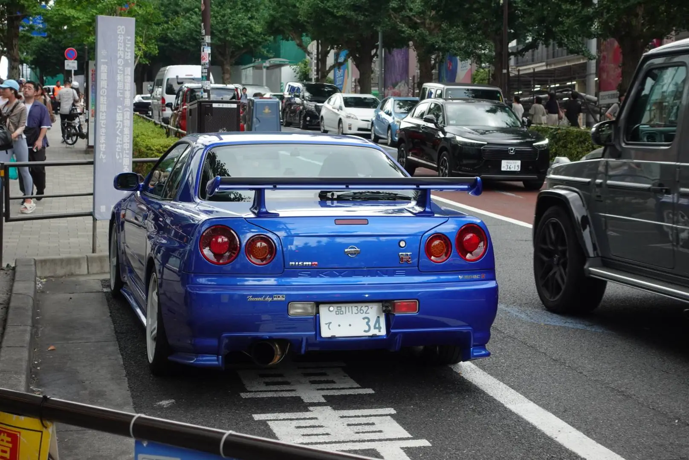
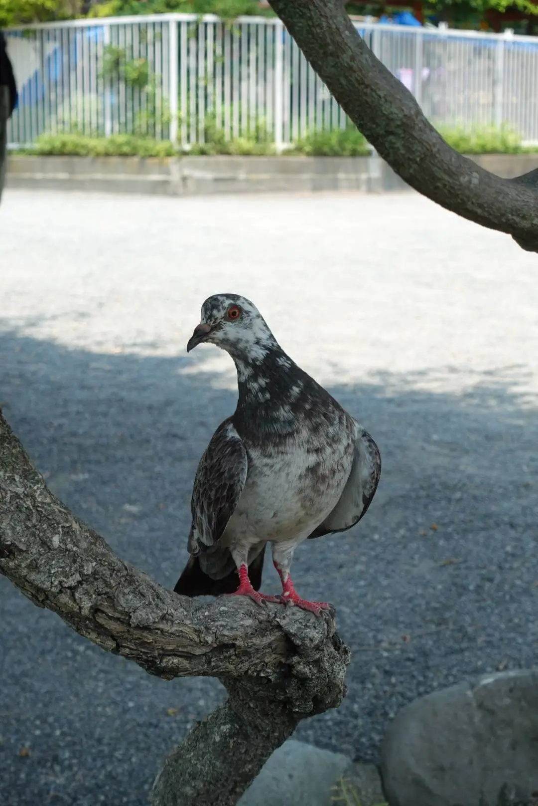
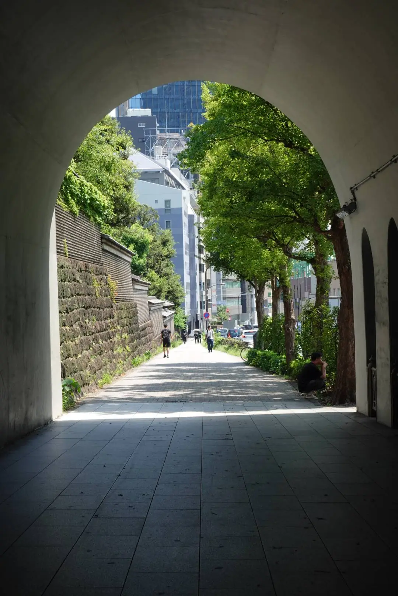
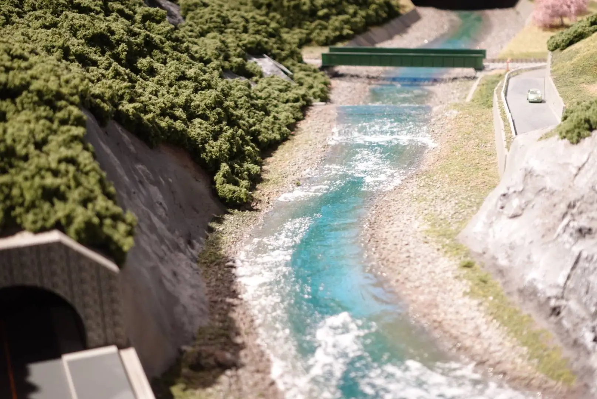
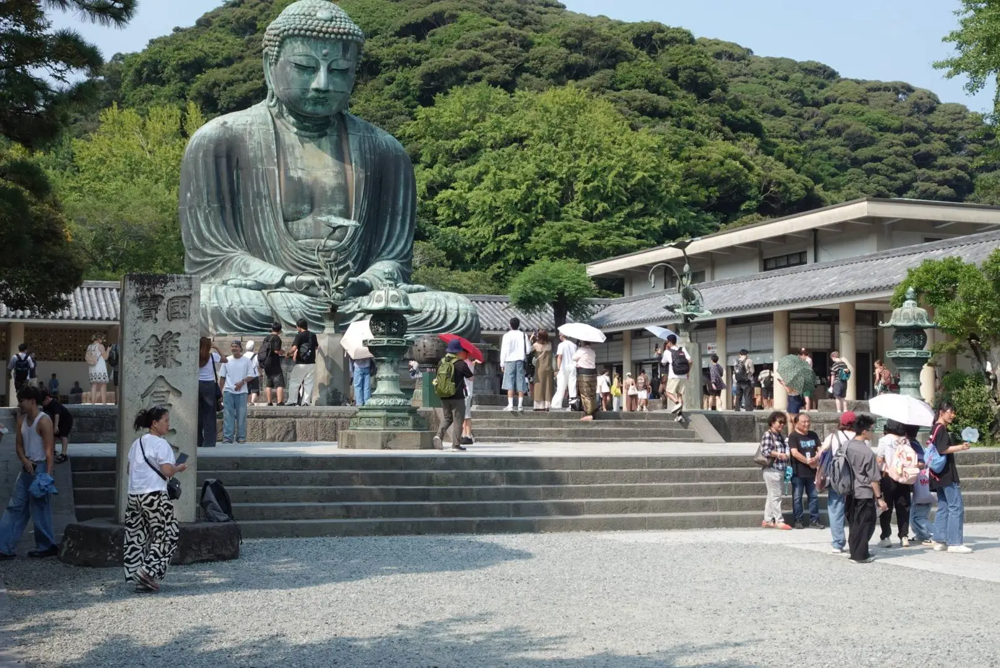

This section is more so about my short time in Japan in 2026 and studying abroad there!
The following images are some of the highlight locations I have visited in Japan such as Odaiba, Kamakura and most of Tokyo!





To me travelling to Japan has always been a dream destination of mine ever since I was a child and I am glad that now I was able to travel and take photos there. The whole experience of living in a foreign country was scary to me at first even if I know a bit of Japanese, but at the same time I learned so much and I will be greatful towards the University of Hull and Ochanomizu University for helping me out.
In any case I would love to visit more of Japan next year there were so many amazing things about it such as the food, locations and the friendly people! So please enjoy the pictures I took with my camera and if you want to see more you can do so here: These are more photos of my time in Japan here!